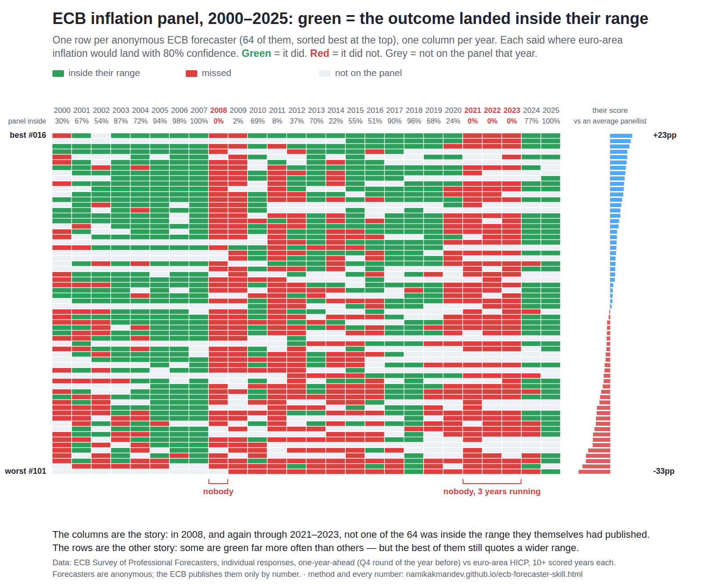
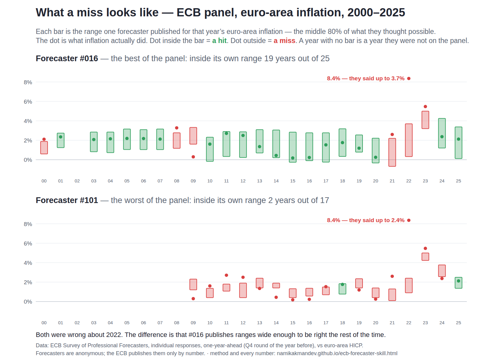

The consensus hides who is worth listening to
Every quarter the European Central Bank asks about fifty banks and research houses the same question, and gets fifty different answers.
Then it averages them into one number, and that is the number everybody quotes.
The ECB also publishes the fifty answers separately. So I followed each forecaster individually, for twenty-six years.
They are not the same. The gap between the most and least reliable forecaster in that room is 57 percentage points, it is far too large to be luck, and a good record predicts a good future record decades later. About half of that gap turns out to be a habit of quoting wider ranges rather than knowing more — which is worth knowing too. None of it reaches you, because the average destroys it, and the names are anonymous anyway.
Companion to A consensus range is not a risk range, which scored the panel as a whole. Same data, no new fetching: 64 forecasters with ten or more scored years, 1,184 forecasts, euro-area inflation, 2000–2025.

One row per forecaster, one column per year. Green means
inflation landed inside the 80% range that forecaster published for
that year; red means it did not; grey means they were not on the panel. The
percentages along the top are how much of the panel was inside that year. The bars on
the right are each forecaster's score against a year-matched average. Regenerate with
python3 scripts/ecb_forecaster_skill.py.
Read it two ways. Down the columns: 2008, and then 2021, 2022 and 2023 in a row, are solid red — not one forecaster on the panel contained the outcome, in any of those years. Across the rows: some are green far more often than others, and that difference is too large and too persistent to be luck.

What a miss actually looks like. The best and the worst forecaster on the panel, year by year. Each bar is the 80% range they published; each dot is what inflation did. Both were wrong about 2022 — but look at the bar widths. #016's ranges are more than twice as wide as #101's, and that is a large part of why #016 is right more often.
1
The differences are real
The spread across forecasters is 13.5 points. If every forecaster were equally good and the variation were pure luck, it would be 8.4 points. Across 20,000 simulations the observed spread was never matched — p < 0.001.
2
And they last — but half of it is style
Split each forecaster's career in half: the first half predicts the second at r = +0.46 (p = 0.0002). But a forecaster who always quotes a wide range is inside it more often without knowing anything more, and width alone explains 47% of the score. Strip width out and the persistence falls to r = +0.28 (p = 0.037). Something durable survives. It is smaller than it first looked.
3
But almost nobody is good enough
Only 1 of 64 forecasters had their 80% ranges actually hold 80% of the time. The best in Europe is merely adequate. The trait is real, persistent, and almost universally insufficient.
The confounder that had to go first
Forecasters cover different years, and years are not equally hard. The panel as a whole managed 100% coverage in 2007 and 0% in 2008. Anyone active only in the calm stretch would look brilliant for nothing.
| Year | Panel coverage | |
|---|---|---|
| 2007 | 100% | easiest — every forecaster contained the outcome |
| 2025 | 100% | |
| 2006 | 98% | |
| 2008, 2021, 2022, 2023 | 0% | hardest — not one forecaster contained the outcome, in any of them |
So every forecaster is scored against what an average forecaster facing their exact years would have achieved. A forecaster who was present for 2008 is not punished for it; a forecaster who sat out 2008 gets no credit for missing it.
Controlling for it made the result stronger, not weaker. Before the adjustment the spread was 14.2 points against 11.9 from luck (p = 0.016). After it, 13.5 against 8.4 (p < 0.001). Year composition had been masking the signal, not creating it. That is the opposite of what a confounder usually does, and worth stating plainly.
The extremes
Scores are percentage points above or below a year-matched average forecaster. The coverage column is the raw share of years their own 80% range contained the outcome — where 80% is the honest target.
| Forecaster | Skill vs year-matched average | Years scored | Raw coverage | Median range width |
|---|---|---|---|---|
| #016 | +23pp | 25 | 76% | 2.49pp |
| #115 | +22pp | 11 | 73% | 2.49pp |
| #089 | +20pp | 26 | 73% | 1.57pp |
| #092 | +18pp | 15 | 80% | 1.72pp |
| #088 | +18pp | 13 | 77% | 1.80pp |
| · · · 54 forecasters in between · · · | ||||
| #070 | −23pp | 15 | 33% | 0.73pp |
| #063 | −26pp | 14 | 36% | 0.87pp |
| #093 | −26pp | 26 | 27% | 0.97pp |
| #029 | −29pp | 21 | 19% | 0.97pp |
| #101 | −33pp | 17 | 12% | 1.00pp |
Forecaster #101 published a range they were 80% confident in, seventeen times. It contained the answer twice. Forecaster #093 has the longest possible record — all 26 years — and sits 26 points below average, so this is not a small-sample artefact at the bottom either.
Nobody knows who these are, and this makes no attempt to find out. The ECB publishes panellists only by number and provides no mapping. The numbers are stable identities — #016 in 2000 is the same desk as #016 in 2022 — which is what makes following a career possible without ever knowing whose it is. Speculating about which institution holds which number would be both unfounded and a misuse of data published on the understanding that it stays anonymous.
Better, or just vaguer?
A forecaster who always says “somewhere between 0% and 4%” will be inside their own range more often than one who says “1.5% to 2.0%”, without knowing anything more. Since the score rewards being inside the range, it can be earned by width alone. That is the obvious objection to everything above, so it gets its own test.
It is a real problem, and it is about half the story. Across the 64 forecasters, median range width and skill correlate at r = +0.69. Width alone explains 47% of the score. The best forecaster, #016, publishes ranges 2.49pp wide; the worst, #101, publishes ranges 1.00pp wide, against a panel median of 1.22pp.
range width = 90th percentile − 10th percentile of that forecaster's published distribution, that year; the figure quoted per forecaster is the median across their scored years
Three things say the rest is not width:
- Split the panel at the median width. Among the 32 narrower-than- median forecasters the spread in skill is still 10.7 points; among the 32 wider-than-median ones, 9.2 points. Holding width roughly constant removes some of the gap, not most of it.
- Persistence survives, smaller. Fit one line through half-career score against half-career width, take the residuals, and re-run the split-half test on what width cannot explain. The correlation falls from +0.46 to +0.28, permutation p = 0.037, n = 58. Weaker, marginal, still there.
- Width is not free. A wide range is a worse answer to the question you actually asked. If half the measured skill is a habit of publishing honest, uncomfortable width, that is still the habit worth copying — it is just not the same as foresight, and this page should not have called it that.
Robustness cut. The measured width is contaminated where a percentile falls in one of the survey's open-ended end buckets, because the boundary is substituted for the percentile and the range comes out too narrow. That happens in 41 of 1,184 forecasts (3.5%). Drop them and the width correlation is r = +0.691 against +0.689 with them in. The artefact is not what is driving this.
No methodology break underneath it. The survey's histogram bins are on the same 0.5pp grid in every year from 2000 to 2025, so a width measured in 2003 is comparable with one measured in 2023. Only the open-ended top boundary moved (3.5% to 4.0% to 5.0%), which is the artefact the cut above tests.
This test was added after publication, in response to the limitation the first version of this page had already flagged as open. The finding demoted the headline rather than supporting it, which is why it is here rather than quietly dropped.
Method
- The score. For each forecaster: how many years their own 80% range contained the outcome, minus how many an average forecaster facing the same years would have got. Divided by the number of years, so it reads as percentage points.
- Is the spread real? Simulate 20,000 panels in which every forecaster is identical, each year's difficulty held at its actual value, and compare the observed spread to that distribution. This is a null built from the data, not a table lookup.
- Does it persist? Split each career in half by year, score both halves the same way, and correlate. Significance by permutation — shuffle the second halves 20,000 times and see how often chance produces a correlation this large.
- Who counts. Forecasters with at least ten scored years. A shorter record cannot distinguish skill from luck in either direction.
- Is it just width? Take each forecaster's median published range width and correlate it with their score. Then split careers in half, regress each half's score on that half's width with one pooled line, and re-run the split-half correlation on the residuals — the persistence that width cannot account for. Then re-run the width correlation with every open-bucket forecast dropped, to check the survey's end buckets are not producing it.
skill = (their hits − year-matched expected hits) ÷ years
Limitations
- Ten years is still a short record. A forecaster with exactly ten scored years has a wide luck band around them, drawn by simulation rather than assumed. Only fifteen of the 64 sit outside it; the other 49 are individually indistinguishable from average, however green or red their row looks. The panel-level spread is solid; any single row is not.
- Skill at what, exactly. This measures honesty about uncertainty — whether a stated range behaves like one. It does not measure whether the central forecast was close, which is a different and more commonly asked question.
- Width is only partly controlled. The median-split and the residual regression both assume the width effect is roughly linear and stable within a career. The regression line is fitted on the same half-careers whose residuals are then correlated, which is a conditional test rather than a clean out-of-sample one. A proper answer needs a scoring rule that charges for width directly — a continuous ranked probability score over the full published distribution — which this study does not compute. Read the residual r = +0.28 as suggestive, not settled.
- The unit is the forecaster, not the year. The 64 scores are not 64 independent time-series observations, and the permutation nulls shuffle forecasters rather than assume independence across years. But forecasters share years, so their errors are correlated through whatever made a given year hard. The year-difficulty adjustment removes the average of that; it cannot remove what is left over.
- Coverage is blunt. Being outside the range by 0.1pp and by 6pp count the same. Carried over from the companion study, and unchanged.
- Survivorship. Forecasters who left the panel early are excluded by the ten-year rule. If institutions leave because they forecast badly, the surviving panel looks better than the profession does.
- Five tests on one dataset, none pre-registered. The first two clear conventional thresholds by a wide margin (p < 0.001 and p = 0.0002), so a correction for multiple testing would not change them. The residual persistence test would not survive one: p = 0.037 against a Bonferroni threshold of 0.01 for five tests. It is reported as marginal for that reason. The year-adjustment and the width test were both added after seeing earlier results.
- The open-ended top bucket. Inherited from the companion study: a percentile landing in the open top bucket uses the boundary, which narrows the range slightly and overstates overconfidence. It affects 3.4% of distributions and applies to everyone roughly equally, so it should not bias the comparison between forecasters.
What to do with this
- Stop treating “the consensus” as one voice. It is an average over people who differ by 57 points in reliability. The number you are handed carries none of that, and the dispersion is real information that aggregation deletes.
- When you can see individual forecasters, track them — and record the width they quoted. Past reliability predicts future reliability, but about half of that is a stable habit of quoting wider ranges. Score both: how often they were inside, and how wide they had to be to manage it. A supplier who is right inside ±1% beats one who is right inside ±3%, and only the second column tells you which you have.
- Do not expect anyone to be good enough. One in sixty-four cleared their own bar. Even choosing well leaves you with ranges that are too narrow.
What would change this conclusion. The first version of this page listed exactly one open question: whether the persistence was stable style rather than stable skill. Tested, it is about half style. What would move it further is a scoring rule that charges for width directly, on the full published distributions rather than the 80% range — if the residual skill vanishes under one, the honest reading becomes “prefer forecasters who admit wide ranges”, with nothing left over for foresight.
The script, in full
Nothing is elided. This is the file that produced every number and the chart on this page, exactly as it runs.
ecb_forecaster_skill.py (592 lines)
#!/usr/bin/env python3
"""Is any individual ECB forecaster consistently honest about uncertainty?
The companion study (ecb_spf_calibration.py) scored the panel as a whole: when
these forecasters mark out a range they are 80% sure about, the outcome lands
inside it 53% of the time. This asks a different question of the same data.
The ECB anonymises panellists by number and publishes no mapping, so nobody
outside the ECB knows which institution is which — and this makes no attempt to
find out. But the numbers are stable identities: #016 in 2000 is the same desk
as #016 in 2022. So an individual record can be followed for a quarter of a
century without ever knowing whose it is.
The confounder that had to be removed first: forecasters cover different years,
and years differ enormously in difficulty — the panel managed 100% coverage in
2007 and 0% in 2008. Anyone active only in the calm years would look brilliant
for free. So each forecaster is scored against what an average forecaster
facing THEIR EXACT YEARS would have achieved. Controlling for it makes the
result stronger, not weaker; it had been masking the signal.
Two tests, both against explicit null distributions rather than a table:
- is the spread across forecasters wider than luck would produce, if every
forecaster were equally good?
- does the first half of a forecaster's career predict the second half?
Stdlib only, seeded, deterministic.
python3 scripts/ecb_forecaster_skill.py
"""
import collections, json, os, random, statistics, sys
sys.path.insert(0, os.path.dirname(os.path.abspath(__file__)))
from ecb_spf_calibration import load, quantile, TOL # noqa: E402
from fte_chart import render_png # noqa: E402
SEED = 42
ITERS = 20_000
MIN_YEARS = 10 # a record shorter than this says nothing either way
BAND = 0.80
OUT = "data/ecb-forecaster-skill.json"
def clipped(bins, q):
"""True if quantile q falls in an open-ended bucket, where the boundary is
substituted for the true percentile — which narrows the measured range."""
total = sum(bins.values())
cum = 0.0
for lo, hi in sorted(bins):
pr = bins[(lo, hi)] / total
if cum + pr >= q:
return hi >= 99 or lo <= -99
cum += pr
return False
def records(dists, actual):
"""-> {forecaster: [(year, hit, width, lo, hi, clipped)]} one year ahead."""
one = lambda t, rd: rd.startswith(f"{t - 1}-Q4")
rec = collections.defaultdict(list)
tail = (1 - BAND) / 2
for (t, rd, who), bins in dists.items():
if t not in actual or not rd or not one(t, rd):
continue
if abs(sum(bins.values()) - 100.0) > TOL:
continue
lo, hi = quantile(bins, tail), quantile(bins, 1 - tail)
if lo is None or hi is None:
continue
rec[who].append((t, 1 if lo <= actual[t] <= hi else 0, hi - lo,
round(lo, 2), round(hi, 2),
clipped(bins, tail) or clipped(bins, 1 - tail)))
return {w: v for w, v in rec.items() if len(v) >= MIN_YEARS}
def year_difficulty(elig):
"""Panel coverage per year — how hard that year was for everyone."""
by = collections.defaultdict(list)
for v in elig.values():
for t, h, *_ in v:
by[t].append(h)
return {t: sum(h) / len(h) for t, h in by.items()}
def skill(elig, p_y):
"""Hits above what the same years would give an average forecaster."""
return {w: (sum(h for _, h, *_ in v) - sum(p_y[t] for t, *_ in v)) / len(v)
for w, v in elig.items()}
def hr(t):
print(f"\n{'=' * 78}\n{t}\n{'=' * 78}")
def main():
doc, actual, dists, _ = load()
elig = records(dists, actual)
p_y = year_difficulty(elig)
score = skill(elig, p_y)
rng = random.Random(SEED)
hr("0. The panel, followed individually")
print(f" forecasters with {MIN_YEARS}+ scored years {len(elig)}")
print(f" forecasts scored "
f"{sum(len(v) for v in elig.values()):,}")
print(f" pooled coverage "
f"{sum(h for v in elig.values() for _, h, *_ in v) / sum(len(v) for v in elig.values()) * 100:.1f}%")
print(" Forecasters are anonymous. The ECB publishes them only by number,")
print(" and nothing here attempts to identify them.")
hr("1. Year difficulty — the confounder that had to go first")
for t in sorted(p_y):
bar = "#" * round(p_y[t] * 30)
print(f" {t} {p_y[t] * 100:>5.0f}% {bar}")
print("\n A forecaster active only in 2003-2007 would look brilliant for")
print(" free. Every score below is measured against what an average")
print(" forecaster facing that forecaster's own years would have managed.")
hr("2. Is the spread wider than luck?")
obs = statistics.pstdev(list(score.values()))
sims = []
for _ in range(ITERS):
s = []
for v in elig.values():
exp = sum(p_y[t] for t, *_ in v)
got = sum(1 for t, *_ in v if rng.random() < p_y[t])
s.append((got - exp) / len(v))
sims.append(statistics.pstdev(s))
sims.sort()
p_spread = sum(1 for x in sims if x >= obs) / len(sims)
print(f" observed spread across forecasters {obs * 100:.1f}pp")
print(f" if every forecaster were equal median "
f"{statistics.median(sims) * 100:.1f}pp, 95th "
f"{sims[int(0.95 * len(sims))] * 100:.1f}pp")
print(f" p = {p_spread:.4f} -> "
f"{'real differences between forecasters' if p_spread < 0.05 else 'indistinguishable from luck'}")
srt = sorted(score.items(), key=lambda x: -x[1])
print(f"\n best " + ", ".join(f"#{w} {v * 100:+.0f}pp" for w, v in srt[:5]))
print(f" worst " + ", ".join(f"#{w} {v * 100:+.0f}pp" for w, v in srt[-5:]))
print(f" gap between best and worst: "
f"{(srt[0][1] - srt[-1][1]) * 100:.0f} percentage points")
hr("3. Does a good record keep being good?")
pairs = []
for w, v in elig.items():
v = sorted(v)
if len(v) < 12:
continue
h = len(v) // 2
def sc(part):
return (sum(x for _, x, *_ in part)
- sum(p_y[t] for t, *_ in part)) / len(part)
pairs.append((sc(v[:h]), sc(v[h:])))
xs = [a for a, _ in pairs]
ys = [b for _, b in pairs]
mx, my = statistics.mean(xs), statistics.mean(ys)
num = sum((a - mx) * (b - my) for a, b in pairs)
den = (sum((a - mx) ** 2 for a in xs) * sum((b - my) ** 2 for b in ys)) ** .5
r = num / den if den else float("nan")
hit = 0
for _ in range(ITERS):
sh = ys[:]
rng.shuffle(sh)
m2 = statistics.mean(sh)
nn = sum((a - mx) * (b - m2) for a, b in zip(xs, sh))
dd = (sum((a - mx) ** 2 for a in xs)
* sum((b - m2) ** 2 for b in sh)) ** .5
if dd and abs(nn / dd) >= abs(r):
hit += 1
p_split = hit / ITERS
print(f" first half of a career vs second half, n={len(pairs)} forecasters")
print(f" r = {r:+.3f} permutation p = {p_split:.4f}")
print(f" -> {'honesty about uncertainty is a durable trait' if p_split < 0.05 else 'no persistence'}")
hr("4. Is the best forecaster better, or just vaguer?")
width = {w: statistics.median(d for _, _, d, *_ in v) for w, v in elig.items()}
xs = [width[w] for w in elig]
ys = [score[w] for w in elig]
mx, my = statistics.mean(xs), statistics.mean(ys)
num = sum((a - mx) * (b - my) for a, b in zip(xs, ys))
den = (sum((a - mx) ** 2 for a in xs)
* sum((b - my) ** 2 for b in ys)) ** .5
r_w = num / den if den else float("nan")
print(" A forecaster who always quotes a wide range will be inside it more")
print(" often without knowing anything more. So how much of the score is")
print(" simply width?\n")
print(f" correlation between median range width and skill: r = {r_w:+.3f}")
print(f" width explains {r_w * r_w * 100:.0f}% of the skill score")
print(f" median range width across the panel: "
f"{statistics.median(xs):.2f} percentage points\n")
srt_w = sorted(elig, key=lambda w: -score[w])
print(f" {'forecaster':<12}{'skill':>9}{'median range width':>22}")
for w in srt_w[:3] + srt_w[-3:]:
print(f" #{w:<11}{score[w] * 100:>+8.0f}pp{width[w]:>20.2f}pp")
narrow = [w for w in elig if width[w] < statistics.median(xs)]
wide = [w for w in elig if width[w] >= statistics.median(xs)]
print()
for name, grp in (("narrower-than-median", narrow), ("wider-than-median", wide)):
sk = [score[w] for w in grp]
print(f" among {name} forecasters (n={len(grp)}): spread still "
f"{statistics.pstdev(sk) * 100:.1f}pp, "
f"best {max(sk) * 100:+.0f}pp worst {min(sk) * 100:+.0f}pp")
# Does the persistence survive width? Split each career in half, take each
# half's score AND its median width, strip the width effect with one pooled
# regression line, and re-run the split-half correlation on the residuals.
halves = []
for w, v in elig.items():
v = sorted(v)
if len(v) < 12:
continue
h = len(v) // 2
def hs(part):
return ((sum(x for _, x, *_ in part)
- sum(p_y[t] for t, *_ in part)) / len(part),
statistics.median(d for _, _, d, *_ in part))
halves.append((hs(v[:h]), hs(v[h:])))
ws = [d for pair in halves for _, d in pair]
ss = [q for pair in halves for q, _ in pair]
mw, ms = statistics.mean(ws), statistics.mean(ss)
sw = sum((a - mw) ** 2 for a in ws)
b = sum((a - mw) * (q - ms) for a, q in zip(ws, ss)) / sw if sw else 0.0
res = [(q1 - (ms + b * (d1 - mw)), q2 - (ms + b * (d2 - mw)))
for (q1, d1), (q2, d2) in halves]
r_res, p_res = corr_perm(res, rng, ITERS)
print(f"\n persistence on raw scores: r = {r:+.3f}")
print(f" persistence after removing width: r = {r_res:+.3f} "
f"permutation p = {p_res:.4f}")
print(f" -> {'a durable habit of quoting wider ranges explains part of it,' if p_res < 0.05 else 'nothing survives:'}")
print(f" {'but something that is not width still persists' if p_res < 0.05 else 'the persistence was width all along'}")
# The open-ended buckets substitute a boundary for a percentile, which
# narrows the measured range. Re-run the width correlation on the years
# where no boundary was substituted, and see whether it moves.
clean = {w: [x for x in v if not x[5]] for w, v in elig.items()}
clean = {w: v for w, v in clean.items() if len(v) >= MIN_YEARS}
n_clip = sum(1 for v in elig.values() for x in v if x[5])
n_all = sum(len(v) for v in elig.values())
cw = {w: statistics.median(d for _, _, d, *_ in v) for w, v in clean.items()}
cxs = [cw[w] for w in clean]
cys = [score[w] for w in clean]
mcx, mcy = statistics.mean(cxs), statistics.mean(cys)
cnum = sum((a - mcx) * (b - mcy) for a, b in zip(cxs, cys))
cden = (sum((a - mcx) ** 2 for a in cxs)
* sum((b - mcy) ** 2 for b in cys)) ** .5
r_clean = cnum / cden if cden else float("nan")
print(f"\n robustness: {n_clip} of {n_all} forecasts ({n_clip / n_all * 100:.1f}%) "
f"had a percentile fall in an open-ended bucket,")
print(f" where the boundary is substituted and the measured range narrows.")
print(f" dropping them ({len(clean)} forecasters still have {MIN_YEARS}+ years): "
f"r = {r_clean:+.3f} against {r_w:+.3f}")
print("\n So roughly half the score is style, not skill. Something remains")
print(" after width is held roughly constant — but the headline number")
print(" overstates how much of it is knowing anything.")
hr("5. But almost nobody clears the bar")
cov = {w: sum(h for _, h, *_ in v) / len(v) for w, v in elig.items()}
good = sorted((c for c in cov.values() if c >= BAND), reverse=True)
print(f" forecasters whose 80% ranges actually held 80% of the time: "
f"{len(good)} of {len(cov)}")
print(" Skill in being honest about uncertainty is real, persistent, and")
print(" almost universally insufficient.")
# ------------------------------------------------------------------ export
pool = []
for _ in range(4000):
for v in elig.values():
exp = sum(p_y[t] for t, *_ in v)
got = sum(1 for t, *_ in v if rng.random() < p_y[t])
pool.append((got - exp) / len(v))
pool.sort()
luck = [pool[int(0.025 * len(pool))], pool[int(0.975 * len(pool))]]
out = {
"generated_by": "scripts/ecb_forecaster_skill.py",
"source_url": doc["source_url"], "fetched_at": doc["fetched_at"],
"note": ("Forecasters are anonymous; the ECB publishes them only by "
"number and this makes no attempt to identify them."),
"seed": SEED, "iters": ITERS, "min_years": MIN_YEARS,
"n_forecasters": len(elig),
"n_forecasts": sum(len(v) for v in elig.values()),
"year_difficulty": {str(t): round(p, 4) for t, p in sorted(p_y.items())},
"spread": {"observed_sd": round(obs, 4),
"null_median_sd": round(statistics.median(sims), 4),
"p": round(p_spread, 4)},
"split_half": {"n": len(pairs), "r": round(r, 4),
"p": round(p_split, 4)},
"luck_band": [round(luck[0], 4), round(luck[1], 4)],
"above_bar": len(good),
"width": {"r_with_skill": round(r_w, 4),
"r2": round(r_w * r_w, 4),
"median_width_pp": round(statistics.median(xs), 3),
"by_forecaster": {w: round(width[w], 3) for w in elig},
"clipping_cut": {"n_clipped": n_clip, "n_all": n_all,
"n_forecasters": len(clean),
"r": round(r_clean, 4)},
"split_half_residual": {"n": len(halves),
"r": round(r_res, 4),
"p": round(p_res, 4)},
"strata": {name: {"n": len(grp),
"sd": round(statistics.pstdev(
[score[w] for w in grp]), 4)}
for name, grp in (("narrow", narrow),
("wide", wide))}},
"grid": [{"who": w, "skill": round(v, 4),
"width": round(width[w], 3),
"years": {str(t): int(h) for t, h, *_ in sorted(elig[w])}}
for w, v in srt],
"examples": {w: [{"year": t, "lo": lo, "hi": hi,
"actual": round(actual[t], 2), "hit": int(h)}
for t, h, d, lo, hi, _c in sorted(elig[w])]
for w in (srt[0][0], srt[-1][0])},
"scores": [{"who": w, "skill": round(v, 4), "years": len(elig[w]),
"coverage": round(cov[w], 4)} for w, v in srt],
}
with open(OUT, "w") as fh:
json.dump(out, fh, indent=1)
print(f"\n wrote {OUT}")
chart(out)
chart_ranges(out)
return 0
def corr_perm(pairs, rng, iters):
"""Pearson r over (x, y) pairs, with a two-sided permutation p-value."""
xs = [a for a, _ in pairs]
ys = [b for _, b in pairs]
mx, my = statistics.mean(xs), statistics.mean(ys)
sx = sum((a - mx) ** 2 for a in xs)
def rr(zs):
mz = statistics.mean(zs)
dd = (sx * sum((b - mz) ** 2 for b in zs)) ** .5
if not dd:
return float("nan")
return sum((a - mx) * (b - mz) for a, b in zip(xs, zs)) / dd
r = rr(ys)
hit = 0
for _ in range(iters):
sh = ys[:]
rng.shuffle(sh)
v = rr(sh)
if v == v and abs(v) >= abs(r):
hit += 1
return r, hit / iters
def chart(res):
"""Forecaster x year: which years each one was inside its own range."""
rows = sorted(res["grid"], key=lambda r: -r["skill"])
years = list(range(2000, 2026))
diff = {int(k): v for k, v in res["year_difficulty"].items()}
n = len(rows)
W, L, T, R = 1600, 118, 300, 56
CW, CH, BARW, GAP = 44.0, 12.0, 170, 26
GW = CW * len(years)
H = int(T + CH * n + 246)
GREEN, RED, ABSENT = "#2e9e5b", "#d94040", "#eceff3"
BLUE, DIM, INK, GRID = "#2f9bff", "#5b6472", "#1f2430", "#c9d1db"
F = ("-apple-system,BlinkMacSystemFont,'Segoe UI',Roboto,"
"'Helvetica Neue',Arial,sans-serif")
BX = L + GW + GAP
def cx(t):
return L + (t - years[0]) * CW
def sx(v):
return BX + BARW / 2 + (v / 0.40) * (BARW / 2)
o = [f'<svg xmlns="http://www.w3.org/2000/svg" width="{W}" height="{H}" '
f'viewBox="0 0 {W} {H}" font-family="{F}">',
f'<rect width="{W}" height="{H}" fill="#fff"/>',
f'<text x="{L}" y="54" font-size="36" font-weight="700" fill="{INK}">'
f'ECB inflation panel, 2000–2025: green = the outcome landed '
f'inside their range</text>',
f'<text x="{L}" y="98" font-size="23" fill="{DIM}">One row per '
f'anonymous ECB forecaster ({n} of them, sorted best at the top), one '
f'column per year. Each said where euro-area</text>',
f'<text x="{L}" y="128" font-size="23" fill="{DIM}">inflation would '
f'land with 80% confidence. '
f'<tspan fill="{GREEN}" font-weight="700">Green</tspan> = it did. '
f'<tspan fill="{RED}" font-weight="700">Red</tspan> = it did not. '
f'Grey = not on the panel that year.</text>']
# ---- legend
ly = 158
for i, (col, lab) in enumerate(((GREEN, "inside their range"),
(RED, "missed"),
(ABSENT, "not on the panel"))):
lx = L + i * 300
o.append(f'<rect x="{lx}" y="{ly}" width="26" height="15" fill="{col}" '
f'rx="2"/>')
o.append(f'<text x="{lx + 36}" y="{ly + 13}" font-size="21" '
f'fill="{DIM}">{lab}</text>')
# ---- year headers
for t in years:
hard = diff.get(t, 1) == 0
o.append(f'<text x="{cx(t) + CW / 2:.1f}" y="{T - 46}" font-size="17" '
f'font-weight="{700 if hard else 400}" '
f'fill="{RED if hard else DIM}" text-anchor="middle">'
f'{t}</text>')
o.append(f'<text x="{cx(t) + CW / 2:.1f}" y="{T - 22}" font-size="16" '
f'font-weight="{700 if hard else 400}" '
f'fill="{RED if hard else DIM}" text-anchor="middle">'
f'{diff.get(t, 0) * 100:.0f}%</text>')
o.append(f'<text x="{L - 14}" y="{T - 22}" font-size="16" fill="{DIM}" '
f'text-anchor="end">panel inside</text>')
# ---- cells
for r, row in enumerate(rows):
yy = T + r * CH
for t in years:
h = row["years"].get(str(t))
col = ABSENT if h is None else (GREEN if h else RED)
o.append(f'<rect x="{cx(t):.1f}" y="{yy:.1f}" '
f'width="{CW - 1.5:.1f}" height="{CH - 1.5:.1f}" '
f'fill="{col}"/>')
# ---- skill bars on the right
o.append(f'<text x="{BX + BARW / 2:.0f}" y="{T - 46}" font-size="17" '
f'fill="{DIM}" text-anchor="middle">their score</text>')
o.append(f'<text x="{BX + BARW / 2:.0f}" y="{T - 22}" font-size="16" '
f'fill="{DIM}" text-anchor="middle">vs an average panellist</text>')
o.append(f'<line x1="{sx(0):.1f}" y1="{T}" x2="{sx(0):.1f}" '
f'y2="{T + CH * n:.1f}" stroke="{GRID}" stroke-width="1"/>')
for r, row in enumerate(rows):
v, yy = row["skill"], T + r * CH
x0, x1 = (sx(0), sx(v)) if v >= 0 else (sx(v), sx(0))
o.append(f'<rect x="{x0:.1f}" y="{yy + 1:.1f}" '
f'width="{max(1.0, x1 - x0):.1f}" height="{CH - 3:.1f}" '
f'fill="{BLUE if v >= 0 else RED}" opacity="0.85"/>')
for r, lab in ((0, "best"), (n - 1, "worst")):
row, yy = rows[r], T + r * CH + CH - 2
o.append(f'<text x="{L - 14}" y="{yy:.1f}" font-size="18" '
f'font-weight="700" fill="{INK}" text-anchor="end">'
f'{lab} #{row["who"]}</text>')
o.append(f'<text x="{BX + BARW + 12}" y="{yy:.1f}" font-size="18" '
f'font-weight="700" fill="{INK}">'
f'{row["skill"] * 100:+.0f}pp</text>')
# ---- the all-red columns
gy = T + CH * n
runs, cur = [], []
for t in years:
if diff.get(t, 1) == 0:
cur.append(t)
elif cur:
runs.append(cur)
cur = []
if cur:
runs.append(cur)
for run in runs:
x0, x1 = cx(run[0]), cx(run[-1]) + CW - 1.5
o.append(f'<path d="M{x0:.1f} {gy + 10} L{x0:.1f} {gy + 20} '
f'L{x1:.1f} {gy + 20} L{x1:.1f} {gy + 10}" fill="none" '
f'stroke="{RED}" stroke-width="2"/>')
o.append(f'<text x="{(x0 + x1) / 2:.1f}" y="{gy + 44}" font-size="19" '
f'font-weight="700" fill="{RED}" text-anchor="middle">'
f'{"nobody" if len(run) == 1 else "nobody, 3 years running"}'
f'</text>')
o += [f'<text x="{L}" y="{H - 104}" font-size="22" fill="{INK}">'
f'The columns are the story: in 2008, and again through '
f'2021–2023, not one of the {n} was inside the range they '
f'themselves had published.</text>',
f'<text x="{L}" y="{H - 74}" font-size="22" fill="{INK}">The rows '
f'are the other story: some are green far more often than others '
f'— but the best of them still quotes a wider range.</text>',
f'<text x="{L}" y="{H - 42}" font-size="18" fill="{DIM}">Data: ECB '
f'Survey of Professional Forecasters, individual responses, '
f'one-year-ahead (Q4 round of the year before) vs euro-area HICP, '
f'{res["min_years"]}+ scored years each.</text>',
f'<text x="{L}" y="{H - 16}" font-size="18" fill="{DIM}">Forecasters '
f'are anonymous; the ECB publishes them only by number. · method '
f'and every number: '
f'namikakmandev.github.io/ecb-forecaster-skill.html</text>',
'</svg>']
svg = "\n".join(o)
os.makedirs("assets/linkedin", exist_ok=True)
path = "assets/linkedin/ecb-forecaster-skill.svg"
with open(path, "w") as fh:
fh.write(svg)
print(f" wrote {path}")
render_png(svg, "assets/linkedin/ecb-forecaster-skill.png", W, H)
def chart_ranges(res):
"""The best and the worst forecaster, year by year, in percentage points."""
ex = res["examples"]
who = [r["who"] for r in sorted(res["grid"], key=lambda r: -r["skill"])]
best, worst = who[0], who[-1]
years = list(range(2000, 2026))
W, L, R, PH, TOP, GAPY = 1600, 118, 60, 340, 232, 128
H = TOP + PH + GAPY + PH + 148
PW = W - L - R
LO, HI = -1.4, 9.2
GREEN, RED, DIM, INK, GRID = ("#2e9e5b", "#d94040", "#5b6472", "#1f2430",
"#dfe4ea")
F = ("-apple-system,BlinkMacSystemFont,'Segoe UI',Roboto,"
"'Helvetica Neue',Arial,sans-serif")
slot = PW / len(years)
def px(t):
return L + (t - years[0]) * slot + slot / 2
o = [f'<svg xmlns="http://www.w3.org/2000/svg" width="{W}" height="{H}" '
f'viewBox="0 0 {W} {H}" font-family="{F}">',
f'<rect width="{W}" height="{H}" fill="#fff"/>',
f'<text x="{L}" y="54" font-size="38" font-weight="700" fill="{INK}">'
f'What a miss looks like — ECB panel, euro-area inflation, '
f'2000–2025</text>',
f'<text x="{L}" y="112" font-size="23" fill="{DIM}">Each bar is the '
f'range one forecaster published for that year’s euro-area '
f'inflation — the middle 80% of what they thought possible.</text>',
f'<text x="{L}" y="142" font-size="23" fill="{DIM}">The dot is what '
f'inflation actually did. Dot inside the bar = '
f'<tspan fill="{GREEN}" font-weight="700">a hit</tspan>. Dot outside '
f'= <tspan fill="{RED}" font-weight="700">a miss</tspan>. '
f'A year with no bar is a year they were not on the panel.</text>']
for k, (w, title) in enumerate(((best, "the best of the panel"),
(worst, "the worst of the panel"))):
t0 = TOP + k * (PH + GAPY)
rec = {r["year"]: r for r in ex[w]}
hits = sum(r["hit"] for r in ex[w])
def py(v, t0=t0):
return t0 + (HI - v) / (HI - LO) * PH
o.append(f'<text x="{L}" y="{t0 - 30}" font-size="27" '
f'font-weight="700" fill="{INK}">Forecaster #{w} '
f'<tspan font-weight="400" fill="{DIM}">— {title}: '
f'inside its own range {hits} years out of '
f'{len(ex[w])}</tspan></text>')
for g in (0, 2, 4, 6, 8):
o.append(f'<line x1="{L}" y1="{py(g):.1f}" x2="{L + PW}" '
f'y2="{py(g):.1f}" stroke="{GRID if g else "#9aa4b2"}" '
f'stroke-width="1"/>')
o.append(f'<text x="{L - 12}" y="{py(g) + 7:.1f}" font-size="19" '
f'fill="{DIM}" text-anchor="end">{g}%</text>')
bw = slot * 0.42
for t in years:
r = rec.get(t)
o.append(f'<text x="{px(t):.1f}" y="{t0 + PH + 30}" '
f'font-size="15" fill="{DIM}" text-anchor="middle">'
f'{str(t)[2:]}</text>')
if not r:
continue
col = GREEN if r["hit"] else RED
o.append(f'<rect x="{px(t) - bw / 2:.1f}" y="{py(r["hi"]):.1f}" '
f'width="{bw:.1f}" '
f'height="{max(2.0, py(r["lo"]) - py(r["hi"])):.1f}" '
f'fill="{col}" opacity="0.30" rx="2"/>')
o.append(f'<rect x="{px(t) - bw / 2:.1f}" y="{py(r["hi"]):.1f}" '
f'width="{bw:.1f}" '
f'height="{max(2.0, py(r["lo"]) - py(r["hi"])):.1f}" '
f'fill="none" stroke="{col}" stroke-width="2" rx="2"/>')
o.append(f'<circle cx="{px(t):.1f}" cy="{py(r["actual"]):.1f}" '
f'r="5.5" fill="{col}"/>')
if t == 2022:
o.append(f'<text x="{px(t) - 14:.1f}" '
f'y="{py(r["actual"]) + 6:.1f}" font-size="19" '
f'font-weight="700" fill="{RED}" text-anchor="end">'
f'8.4% — they said up to '
f'{r["hi"]:.1f}%</text>')
o += [f'<text x="{L}" y="{H - 76}" font-size="22" fill="{INK}">Both were '
f'wrong about 2022. The difference is that #{best} publishes ranges '
f'wide enough to be right the rest of the time.</text>',
f'<text x="{L}" y="{H - 42}" font-size="18" fill="{DIM}">Data: ECB '
f'Survey of Professional Forecasters, individual responses, '
f'one-year-ahead (Q4 round of the year before), vs euro-area HICP.'
f'</text>',
f'<text x="{L}" y="{H - 16}" font-size="18" fill="{DIM}">Forecasters '
f'are anonymous; the ECB publishes them only by number. · method '
f'and every number: '
f'namikakmandev.github.io/ecb-forecaster-skill.html</text>',
'</svg>']
svg = "\n".join(o)
os.makedirs("assets/linkedin", exist_ok=True)
path = "assets/linkedin/ecb-forecaster-ranges.svg"
with open(path, "w") as fh:
fh.write(svg)
print(f" wrote {path}")
render_png(svg, "assets/linkedin/ecb-forecaster-ranges.png", W, H)
if __name__ == "__main__":
sys.exit(main())Reproduce it
Runs from the data committed for the companion study — no fetching required. Stdlib only, seeded, verified byte-identical across runs.
python3 scripts/ecb_forecaster_skill.py
Analysis script Fetch script ECB Data Portal The companion study
Data © European Central Bank, Survey of Professional Forecasters, published openly via the ECB Data Portal. This analysis is independent and not affiliated with or endorsed by the ECB or any survey participant. Forecasters are identified only by the anonymous numbers the ECB itself publishes, and no attempt is made to link a number to an institution. Method and any errors are mine. Written August 2026.